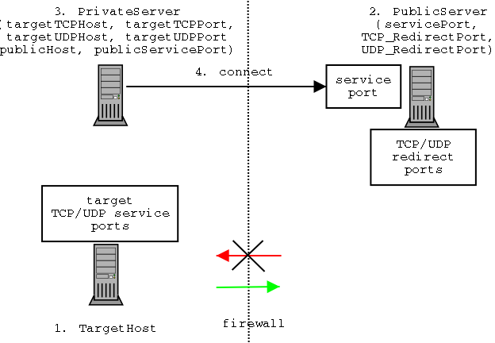
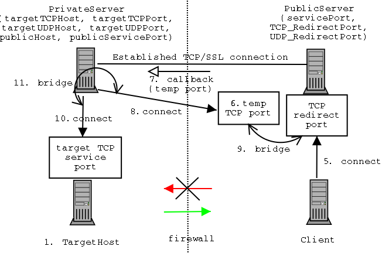
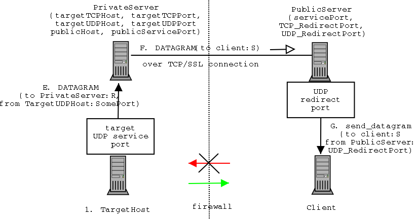

NetCallback 1.3.1
Forwarding TCP and UDP ports behind a firewall
Copyright © 2001 Alexander V. Konstantinou
(akonstan@acm.org)
This program is free software; you can redistribute it and/or modify
it under the terms of the GNU General Public License as published by
the Free Software Foundation; either version 2 of the License, or
(at your option) any later version.
This program is distributed in the hope that it will be useful,
but WITHOUT ANY WARRANTY; without even the implied warranty of
MERCHANTABILITY or FITNESS FOR A PARTICULAR PURPOSE. See the
GNU General Public License for more details.
You should have received a copy of the
GNU General Public License along with this program;
if not, write to the Free Software Foundation Inc., 59 Temple Place, Suite 330, Boston, MA 02111-1307 USA
Contents
NetCallback is a Java application permitting the export of TCP and UDP
ports behind a firewall to hosts outside the firewall. This may
be useful in some special cases, for example, centralized control of
test (demo) networks, or connection to applets running in browsers.
NetCallback consists of a public and a private server. The public server
executes on a host outside the firewall and is responsible for receiving
port forwarding connection requests. The private server executes on
a host behind the firewall and is responsible for contacting the public
server and connecting the protected TCP and/or UDP service to the public
server clients. The connection between public and private server may be
optionally encrypted using SSL.
Note that firewalls exist to protect internal services from external
access, and therefore one should be very careful before creating a hole
in one! As stated in the copyright statement, this program is distributed
in the hope that it will be useful, but WITHOUT ANY WARRANTY; without even the
implied warranty of MERCHANTABILITY or FITNESS FOR A PARTICULAR PURPOSE.
Users are responsible for checking their network use policy
for possible violations before using this software. Use at your own risk!
The NetCallback service requires the execution of two
network daemons. The first daemon executes on a host behind the
firewall and is called PrivateServer. The second daemon
executes on a host outside the firewall and is called PublicServer.
The PublicServer is invoked with three port numbers. The
first port number is used to receive the connection request from the
PrivateServer (service port). The second port number is
the one used by clients to connect to the TCP port forwarding endpoint
(redirect port), and the third for UDP.
The PrivateServer is invoked with the host name and service port
number of PublicServer. Additionally, the PrivateServer
must be provided with both the address and port number of a TCP and/or
a UDP internal service that needs to be exported.
Connect Protocol
The protocol interactions are illustrated in the diagram below (order
is important!):
- A protected service running on a protected host and bound to a port must
be chosen (as the target for redirection).
- A PublicServer must be started on a public host with
a service and a redirect port.
- A PrivateServer must be started on a host that
can access both the target host, as well as the public host.
- Once the PrivateServer is started, it will connect to the
PublicServer's service port.

TCP Tunneling Protocol
At this point, the NetCallback service is ready to accept client TCP redirect
requests:
- A client host connects to the PublicServer redirect port
- The PublicServer binds to a temporary port and waits for
a connection (on a separate thread)
- The PublicServer uses the established connection with the
PrivateServer (from step 4) to request a callback connection
on the temporary port.
- The PrivateServer connects to the PublicHost
temporary port
- The PublicServer starts bridging traffic between the
temporary port and the redirect port (actually the anonymous
socket created when the client connected in step 5).
- The PrivateServer connects to the target host
- The PrivateServer starts bridging traffic between the
target host and the temporary port sockets.

At this point two way communication has been established. The tunnel
is automatically torn down when either the client, or the target host
close the connection.
UDP Tunneling Protocol
In parallel, the NetCallback service is ready to accept client UDP redirect
requests:

- The client host sends a UDP datagram addressed to the
PublicServer UDP redirect port
- The PublicServer writes the datagram's source address/port and
payload to the PrivateServer over the established connection
(TCP/SSL)
- The PrivateServer consults its internal state and checks to
see if a UDP socket has been created to forward requests from the
given client (identified by the address/port combination). If one
has not been created yet, it is initiated and a thread for receiving
datagrams addressed to this socket is created.
The reason that each client must have its own UDP socket is to
determine the destination of returned UDP datagrams (as will be
shown in the next diagram)
- The UDP socket is used to send the payload to the TargetHost

- The UDP service on the TargetHost possibly replies to the
UDP datagram by sending a datagram addressed to the PrivateServer
at the client-specific socket (i.e. port).
- Upon receipt the dedicated PrivateServer thread for this
socket (which knows the real destination) writes the actual
destination address/port and payload over the shared TCP/SSL
connection.
- Upon receipt of the streamed datagram in the PublicServer,
a datagram with the specified information (address/port/payload)
is transmitted.
| PublicServer
| java -jar netcallback.jar -public { -ssl } -servicePort <port> { -tcpPort <port> } { -udpPort <port> }
|
|---|
-ssl
| optional flag to enable SSL communication between servers
|
-servicePort port
| port used to receive private server communications
|
-tcpPort port
| clients use this TCP port to use tunnel
|
-udpPort port
| clients use this UDP port to use tunnel
|
| PrivateServer
| java -jar netcallback.jar -private { -ssl }
-service <host> <port>
{ -tcp <host> <port> }
{ -udp <host> <port> }
|
|---|
-ssl
| optional flag to enable SSL communication between servers
|
-service host port
| name and port of host executing public server
|
-tcp host port
| TCP redirection target host and port
|
-udp host port
| UDP redirection target host and port
|
Public server examples executing on host "free" (without SSL/with SSL):
java -jar netcallback.jar -public -servicePort 1234 -tcpPort 8080 -udpPort 1616
java -jar -Djavax.net.ssl.trustStore=keystore -Djavax.net.ssl.keyStore=keystore -Djavax.net.ssl.keyStorePassword="testing" netcallback.jar -public -ssl -servicePort 1234 -tcpPort 8080 -udpPort 16161
Private server examples executing contacting public server on host "free" and exposing the telnet service on host "protected" (without SSL/with SSL):
java -jar netcallback.jar -private -service free 1234 -tcp protected 80 -udp protected 161
java -jar -Djavax.net.ssl.trustStore=keystore -Djavax.net.ssl.keyStore=keystore -Djavax.net.ssl.keyStorePassword="testing" netcallback.jar -private -ssl -service free 1234 -tcp protected 80 -udp protected 161
Web-access (TCP) and SNMP access (UDP) forwarding examples (UNIX)
lynx http://free:8080
snmpwalk -v 1 -p 1616 free public
NetCallback supports encrypted socket communications using the
Java Secure Socket Extension
(JSSE). SSL is used to encrypt communication between the
PublicServer and the PrivateServer, however,
the connection between the PrivateServer and the private host, as well as the connection between the PublicServer and the client are NOT ENCRYPTED!.
- Download the Java JSSE from the URL http://java.sun.com/products/jsse/ (Starting with JDK1.4 SSL support is a standard part of Java2 and does not need to be downloaded).
- Unzip the downloaded package and follow the installation instructions.
In particular, verify that (again, if your running JDK 1.4 or above you don't need to perform these steps):
- The JSSE lib/*.jar files have been copied to $JAVA_HOME/jre/lib/ext
- The $JAVA_HOME/jre/lib/security/java.security file has been edited and the security.provider.3=com.sun.net.ssl.internal.ssl.Provider property has been added.
- Create an RSA public/private key to be used in the session using the keytool utility found in $JAVA_HOME/bin. Bold items indicate user input (clearly users should pick a different password and user identity!):
keytool -genkey -v -keyalg RSA -keystore keystore
Enter keystore password: testing
What is your first and last name?
[Unknown]: Alexander Konstantinou
What is the name of your organizational unit?
[Unknown]: Computer Science
What is the name of your organization?
[Unknown]: Columbia University
What is the name of your City or Locality?
[Unknown]: New York
What is the name of your State or Province?
[Unknown]: NY
What is the two-letter country code for this unit?
[Unknown]: US
Is <CN=Alexander Konstantinou, OU=Computer Science, O=Columbia University, L=New York, ST=NY, C=US> correct?
[no]: yes
Generating 1024 bit RSA key pair and self-signed certificate (MD5WithRSA)
for: CN=Alexander Konstantinou, OU=Computer Science, O=Columbia University, L=New York, ST=NY, C=US
Enter key password for <mykey>
(RETURN if same as keystore password):
[Saving keystore]
- Invoke the Java interpeter for the PublicServer (-public)
and the PrivateServer (-private) with the following three flags:
-Djavax.net.ssl.trustStore=keystore
-Djavax.net.ssl.keyStore=keystore
-Djavax.net.ssl.keyStorePassword="testing"
- Version 1.3.1 (15 FEB 2004)
- Project migrated to sourceforge.net (package rename)
- Version 1.3 (15 OCT 2001)
- Added support for UDP tunneling
- Modified command-line invocation to support TCP and UDP tunnelling.
- Version 1.2.1b (10 AUG 2001)
- Fixed regression of private server command-line verification
code in 1.2.1 that broke non-SSL use.
- Version 1.2.1 (09 AUG 2001)
- Security hole fix: SSL server socket had not been configured to
require client authentication. This potentially allowed any
PrivateServer to connect to a PublicServer.
- Version 1.2 (22 MAR 2001)
- Added Secure Socket Layer (SSL) support
- CLOSE request now also sent from PublicServer to PrivateServer
- Improved documentation
- Version 1.1 (21 MAR 2001)
- Public and private servers ping each-other in order to prevent
firewalls from terminating the connection.
- When a private server detects termination of the connection to the
protected host it will notify the public server so that the
public server can terminate bridging. Normally, this should not
be necessary, but some firewalls will simply drop packets once
the connection has been closed, making detection by the public
server difficult.
- Version 1.0 (13 MAR 2001)
The latest version of NetCallback can be found at the URL
http://netcallback.sourceforge.net/
The download package includes the NetCallback source code and binary files as well as the current documentation. It is available in two formats: ZIP (Windows) and TAR/GZIP (Unix).
Please address comments/questions to akonstan@acm.org
$Id: README.html,v 1.3 2004/02/16 02:12:50 akonstan Exp $